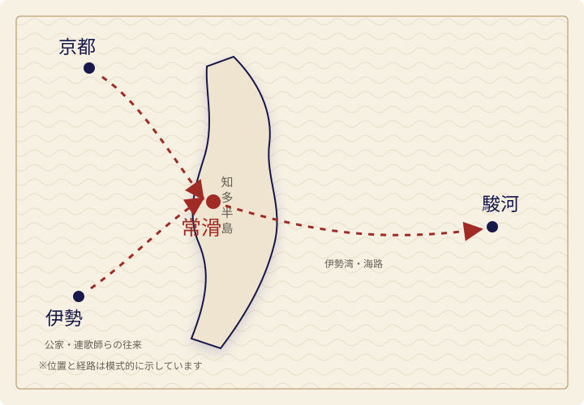
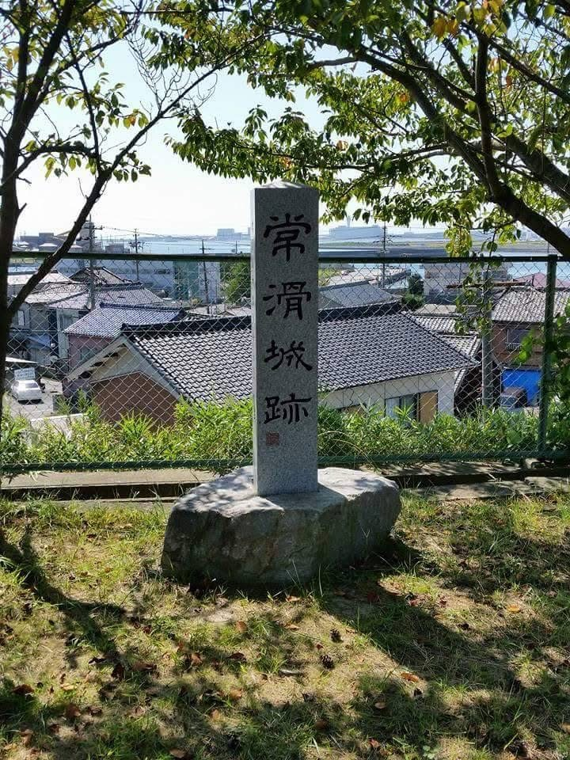
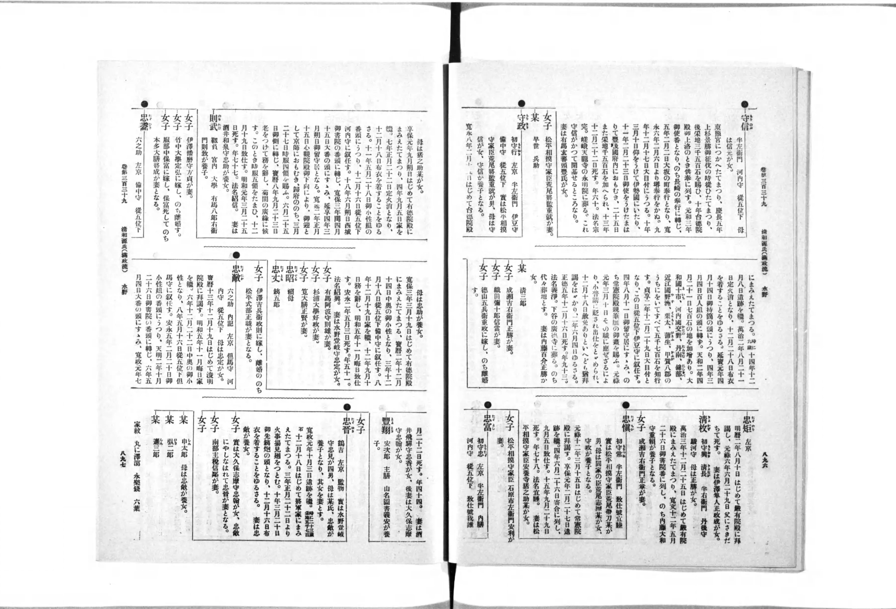

水辺の植物「沢瀉」
沢瀉紋は、水辺に生えるオモダカを図案化したものです。伝来品では、矢尻を思わせる三枚の葉、花の房、茎が金糸で表されています。[7]
TOKONAME MIZUNO FAMILY HISTORY
常滑水野家は、緒川水野氏の流れを汲み、知多の地に拠って戦国から江戸へと時代を越えた一族です。常滑城を中心に地域を治め、武門としての歩みを重ねる一方で、茶の湯、連歌、古文書の伝来に象徴される文化的な足跡も残しました。
一族の歩みをたどるABOUT
知多の海に開かれた常滑の地。その歴史の中で、常滑水野家は武と文化の双方に足跡を残してきました。
緒川水野氏の流れを汲むと伝えられる一族は、常滑城を拠点として戦国の動乱を歩み、やがて江戸の世へと家名をつなぎました。本サイトでは、伝来の由緒と確認可能な史料を尊重し、その歩みを静かにたどります。
CREST & ORIGIN
家の記憶を、ひとつの紋に。
ご当家伝来の品に表された紋は、円の内側に沢瀉を立てた構成から、「丸に立ち沢瀉（まるにたちおもだか）」とみられます。常滑水野家の菩提寺・永明院も、水野家と同院の家紋を同じ「丸に立ち沢瀉」と記しています。[6]
文献・類例との照合による有力な比定丸に立ち沢瀉まるにたちおもだか
金糸で表された紋様は、一族が守り伝えてきた誇りと記憶を象徴するものです。本サイトでは、この家紋を常滑水野家の歴史を示す象徴として掲げます。
伝来・撮影 常滑水野家ご当家所蔵の品を、ご当家がスマートフォンで撮影・提供した画像です。
※ 紋名の比定は写真、永明院の寺伝、家紋類例を照合したものです。伝来品の制作年代は、現物調査を行っていないため判定していません。
READING THE CREST
沢瀉紋は、水辺に生えるオモダカを図案化したものです。伝来品では、矢尻を思わせる三枚の葉、花の房、茎が金糸で表されています。[7]
外周の円が「丸に」、中央で茎葉を立てた構成が「立ち沢瀉」に当たります。写真の図案は、公開されている同名紋の基本構成と一致します。
家紋研究では、水野氏は沢瀉紋を用いた代表的な氏族として挙げられます。知多郡緒川周辺に沢瀉が繁茂していたことに由来するとの伝承も紹介されています。[8]
狭い意味で「水野沢瀉」または「波沢瀉」と呼ばれる紋は、沢瀉の下に波を配します。ご当家伝来品は波ではなく円で囲むため、「丸に立ち沢瀉」と考えるのが自然です。
大切な注意点 家紋は分家・時代・用途によって形が変わることがあります。同じ紋の使用だけで系譜関係を証明することはできません。今後、家譜、墓石、印章、調度品などに残る紋と照合することで、常滑水野家における使用時期をさらに確かめられます。
NEW RESEARCH
近年の研究は、同時代史料を照合し、常滑水野氏の姿をより具体的に描き出しています。
丸島和洋氏の2024年論文は、初代一覚斎、2代守尚、3代紀三郎、4代守隆という歴代像を提示しています。守隆を「4代」とする点は近年の研究による復元案であり、今後も検討が必要です。[1]
足利義輝・義秋（のちの義昭）の文書から、常滑水野氏が将軍直臣として扱われた姿が読み取れます。永禄4年（1561）と推定される義輝の御内書は、水野山城守に武田信虎の駿河下向を助けるよう求めたものです。[1]
常滑は、京都・伊勢方面と駿河を結ぶ海上交通の要所でした。公家や連歌師が往来した記録もあり、常滑水野氏は武力だけでなく、旅人を迎え送り出す地域権力としての役割も担ったと考えられます。[1]

HISTORY
戦国の始まりから江戸の再興へ。時代の波を越えた一族の歩みです。

TOKONAME CASTLE SITE
現在、城跡には「常滑城跡」と刻まれた石碑が立ちます。高台から常滑の町並みと海を望むこの景観は、常滑水野氏が海に開かれた地を拠点としたことを今に伝えます。
撮影・提供：常滑水野家ご当家NOTABLE FIGURES
文化人武将
MORITAKA MIZUNO
守隆の実名は、天正2年（1574）5月8日に興行された「水野監物丞守隆興行山何百韻」によって確認できます。この連歌会では里村紹巴らと百韻を興行し、守隆自身も8句を詠みました。[1]
『天王寺屋会記』には津田宗及らとの茶会交流が重ねて記されます。『利休百会記』にも名が見え、改易後まで文化人として活動を続けた姿が確認できます。[1]
旗本・幕府行政官
MORINOBU MIZUNO
守信は守隆の子として、戦国期に失われた家名を徳川の世に再興しました。『寛政重修諸家譜』には、会津征伐への従軍、書院番・使番、長崎・大坂・堺の奉行を経て惣目付を務めた経歴が記されています。[3]
後世に編纂された家譜の記述である点に留意しつつも、一族が武家として再び幕府中枢へ歩んだことを伝える重要な記録です。
EPISODES
守隆は津田宗及の茶会にたびたび参加し、自らも宗及や佐久間一族を招きました。天正18年頃とみられる『利休百会記』の記事が、確認できる文化活動の終見とされます。千利休との関係の詳細は、今後も慎重な検討が必要です。[1]
守隆が光秀に従ったことは『当代記』に記されますが、その背景や両者の関係の詳細は分かっていません。近年の研究は、信忠のもとへ参じられない混乱の中での選択だった可能性を示しています。[1]
没落と隠棲の時代にあっても、常滑水野家は伝来の文書を守り続けたと伝えられます。織田信長、足利将軍家、徳川家康らとの関わりを示す史料は、一族の歩みを後世へ伝えるための証であり、守り抜いた誇りそのものです。
ARCHIVES
東京大学史料編纂所の2011年調査では、とこなめ陶の森資料館保管の文書として、巻子に仕立てられた織田信長黒印状10通と徳川家康書状1通、別に伝わる信長黒印状1通、足利義輝官途状、家譜・系図類などが確認されています。[2]
現存が確認された計11通。軍事行動や進物への礼などを伝えます。
水野監物丞の官途に関わり、将軍家との関係を示します。
守隆宛の書状。発給年は天正9年とする研究があります。
後世に編まれた系譜や法名の記録を含む一族の伝来資料です。
DOCUMENT GALLERY
各写真を選ぶと拡大して確認できます。解説は、撮影時に添えられていた展示説明札から確実に読み取れる範囲を要約しています。「やさしい現代語」は逐語訳ではなく、展示札の内容を平易にした大意です。
朱印を伴う書状。正式な資料名は目録確認後に更新します。
やさしい現代語長島の件を関係者とよく相談し、両城の様子を見極め、油断せず行動するよう伝えています。
進物の到来に対する礼状。宛所は水野監物殿。
やさしい現代語贈り物を受け取りました。いつも細やかに気を配ってくださることを、とてもうれしく思います。詳しくはお会いしたときにお話しします。
水野監物丞の官途に関する文書。花押を伴います。
やさしい現代語官途については、「監物丞」とするのがよいでしょう。詳しいことは晴直からお伝えします。
鉄砲薬・鉄砲玉への礼や、帰路に関する内容を伝えます。
やさしい現代語鉄砲薬や鉄砲玉などを送ってくださり感謝します。帰り道の時間配分や経路を指示し、京都滞在中の出来事にも言及しています。
発給年について現地では本能寺の変直前との見方も示されました。一方、近年の研究は文面と当時の動向から、天正9年（1581年）とするのが妥当と論じています。[1]
歳末の祝儀として、小袖五領の到来に対する礼状。
やさしい現代語年末のお祝いとして小袖五領を受け取りました。いつもの心遣いをとてもうれしく思います。詳しくはお会いしたときにお話しします。
赤貝一折の到来と、日頃の厚意への礼を伝えます。
やさしい現代語赤貝一折を受け取りました。いつも心をかけてくださることをうれしく思います。詳しくは長谷川と矢部からお伝えします。
海鼠腸一桶と鯛十尾の到来に対する礼状。
やさしい現代語このわた一桶と鯛十尾を受け取りました。たびたびのお便りと贈り物をうれしく思います。詳しくはお会いしたときにお話しします。
二種の進物への礼と、当地の動静に関する内容を伝えます。
やさしい現代語二種類の贈り物をうれしく受け取りました。この地域の情勢を油断なく見守り、しっかり対応してください。
鷹二羽の到来と、日頃の心遣いに対する礼状。
やさしい現代語鷹二羽を受け取りました。いつも誠意をもって心を配ってくださることを、とてもうれしく思います。
「爪（瓜とも）」一折の到来に対する礼状。
やさしい現代語「爪（瓜とも）」一折を受け取りました。遠いところから心を尽くしてくださり、うれしく思います。詳しくはお会いしたときにお話しします。
二種の進物と、日頃の厚意に対する礼状。
やさしい現代語二種類の贈り物を受け取りました。いつも細やかにお便りをくださり、特にありがたく思います。詳しくはお会いしたときにお話しします。
二種の進物一荷と「天野」の到来に対する礼状。
やさしい現代語二種類の贈り物と「天野」を受け取り、深く感謝しています。「天野」は、展示札では天野山金剛寺で造られた酒とされています。
在陣の連絡、二種の進物、住吉普請に関する書状。
やさしい現代語この地域に陣を置いていることを知らせてくれ、贈り物もありがたく思います。住吉の工事は大変でしょうが、引き続き力を尽くしてください。
鯨一折の到来と、日頃の厚意に対する礼状。
やさしい現代語鯨一折を受け取りました。いつも細やかに心を配ってくださることをうれしく思います。詳しくはお会いしたときにお話しします。
所蔵 常滑水野家文書 とこなめ陶の森資料館所蔵
本ページの古文書画像は、とこなめ陶の森資料館の許可を得て掲載しています。史料画像の無断転載・二次利用を禁じます。
史料は、一族の記憶を支える根です。本サイトでは、これらの伝来文書を尊重し、確認できる事実に基づきながら、常滑水野家の歴史を静かに、誠実に伝えてまいります。

SOURCES & EDITORIAL NOTE
2026年8月11日更新。本文中の番号は、以下の資料に対応しています。
『東京都市大学共通教育部紀要』第17号、2024年。歴代当主、足利将軍家との関係、海上交通、守隆の軍事・文化活動、守信の再興を検討する中心文献です。
東京都市大学の論文PDF『東京大学史料編纂所報』第47号、2012年。とこなめ陶の森資料館保管資料の点数・名称を確認できます。
東京大学史料編纂所の調査報告國民圖書、1923年。守隆・守信を含む水野家の系譜と経歴を収録します。江戸後期に編纂された家譜を近代に刊行した資料であり、同時代史料との照合が必要です。
国立国会図書館デジタルコレクション吉川弘文館、2010年、463–464頁。水野守隆の軍歴・文化活動をまとめた人物辞典です。
NDLサーチで書誌を確認渡邊大門編著『織田権力の構造と展開』、歴史と文化の研究所、2017年所収。足利将軍家の文書をもとに、守隆の人物比定と家督交替を検討しています。
院内の水野家墓所の調査経緯とともに、永明院の家紋は水野家と同じ「丸に立ち沢瀉」と明記されています。
永明院公式サイト明治書院、1926年。日本の紋章を歴史資料から考察した基礎文献です。沢瀉紋の歴史と類例を確認する際に参照しました。
国立国会図書館デジタルコレクション（PDM）沢瀉紋の形態、使用家、名称の比較に用いた家紋資料です。水野氏と沢瀉紋の関係についても解説されています。
NDLサーチで書誌を確認常滑水野家文書の所蔵館。掲載している古文書画像は、同館の許可を得て公開しています。
とこなめ陶の森 公式サイト本サイトは、伝来の由緒と確認可能な史料、近年の研究成果をもとに構成しています。築城年代、人物の代数、系譜、明智光秀との関係、千利休との交流の詳細などは、今後の史料確認により表記を見直す場合があります。
寺院や一族に伝わる伝承と、同時代文書から確認できる事実が異なる場合は、両者を区別して紹介します。